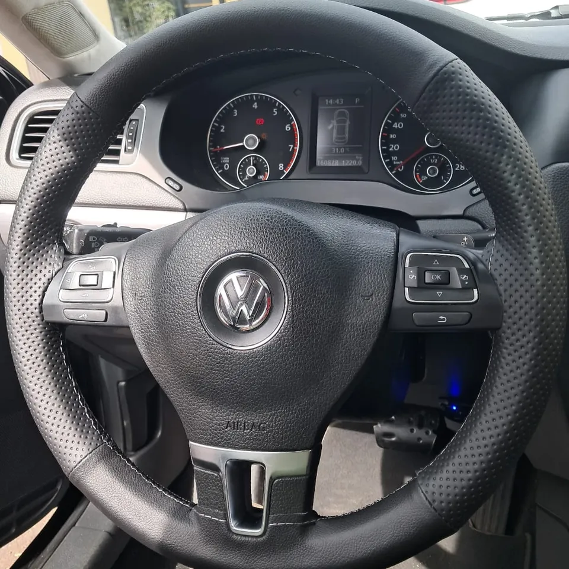
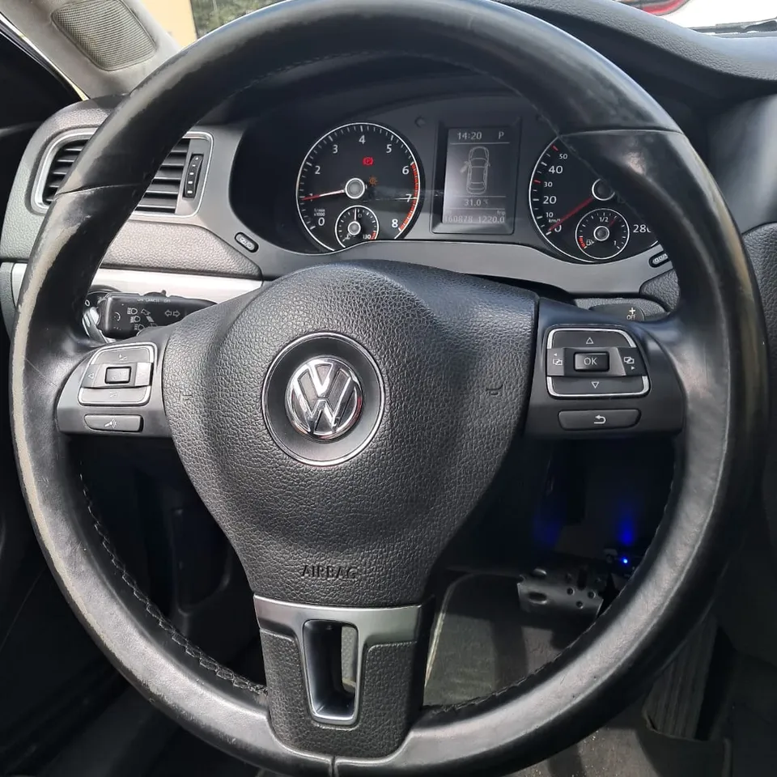
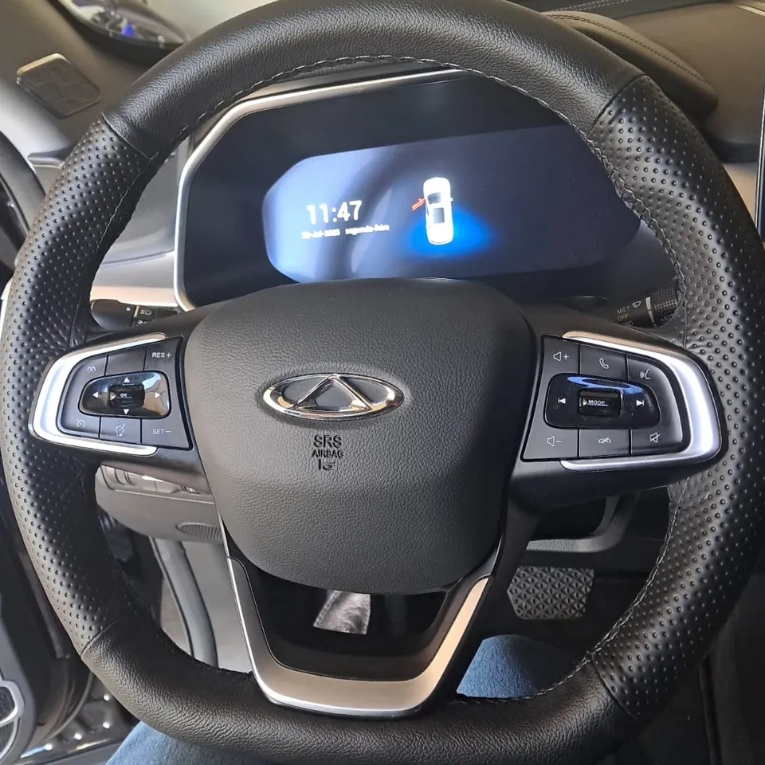
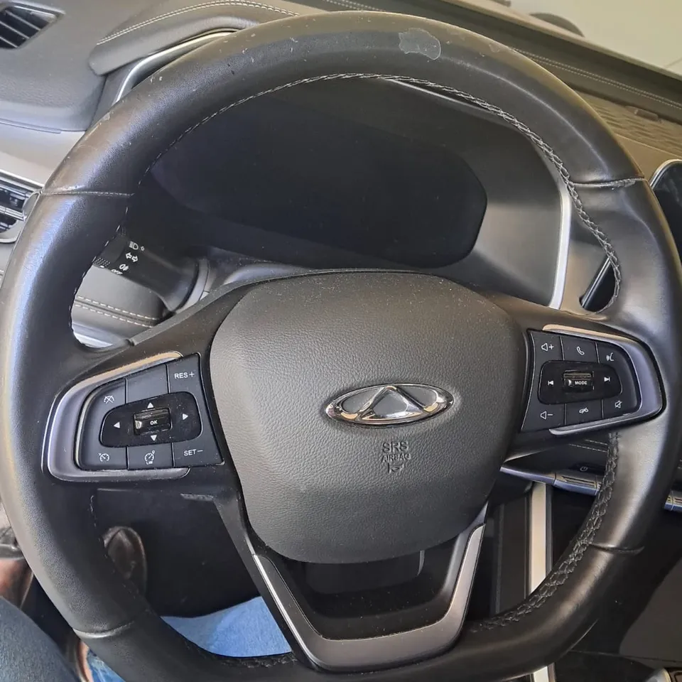
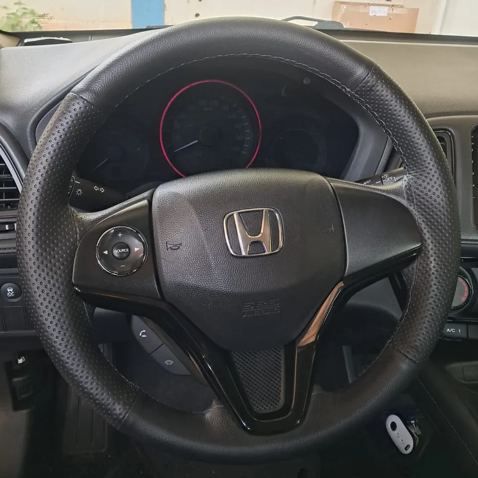
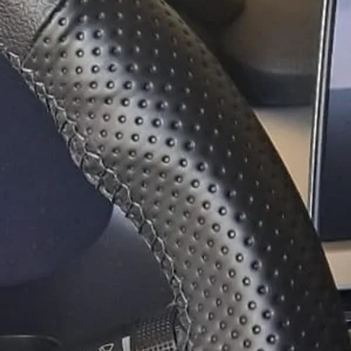
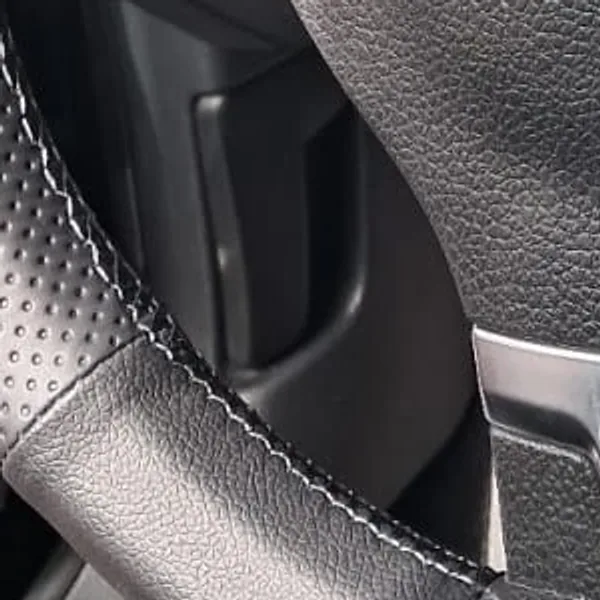
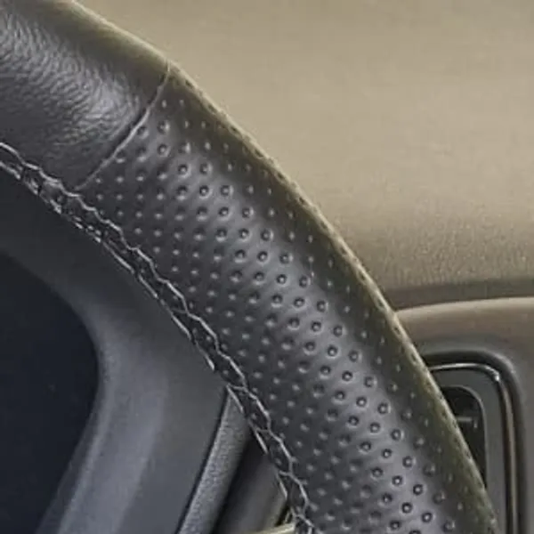

Revestimento do aro
Capa nova na parte onde você segura, ajustada e costurada à mão sobre o volante original. Para volante de borracha ou para quem quer renovar gastando menos.
Chega de volante desgastado ou sem graça. Eleve o visual e o conforto do seu carro em minutos!
Pedir orçamento no WhatsAppAtendemos em Araçatuba, SP, na sua casa ou na nossa.


Antes DepoisPronto em 30 minutos, a partir de R$ 120, com 1 ano de garantia e cerca de 7 anos de experiência.
Todas as fotos são de volantes que passaram pela gente. Escolha um e arraste a linha.


Antes Depois

Ficam onde a mão mais encosta e dão ao aro uma textura de carro novo.

Ponto por ponto, no próprio volante do seu carro.

O revestimento é ajustado ao formato do aro, sem sobras nem folgas.
O próximo pode ser o seu
Mande uma foto pelo WhatsApp e receba seu orçamento. A gente diz qual serviço combina com o seu volante.
Capa nova na parte onde você segura, ajustada e costurada à mão sobre o volante original. Para volante de borracha ou para quem quer renovar gastando menos.
Aro e braços refeitos sob medida, com as divisões e costuras do volante original. Para volante de couro que perdeu a aparência de fábrica.
A partir de R$ 120, com 1 ano de garantia. O material dura de 3 a 4 anos. O valor final depende do modelo e do estado do volante.
Envie pelo WhatsApp uma foto do volante e o modelo do carro.
A gente avalia o desgaste e diz qual serviço, valor e horário.
No dia combinado, em 30 minutos, na sua casa ou na nossa.
Quando o aro descasca ou esfarela, gruda e suja a mão no calor, a costura solta ou o couro abre, ou a superfície fica lisa, ressecada ou desbotada.
Na maioria das vezes, sim. Mande uma foto para a gente avaliar o estado real antes de qualquer decisão.
A partir de R$ 120. O valor final depende do modelo, do desgaste e do serviço escolhido, e o orçamento é feito a partir da foto.
30 minutos.
Na sua casa ou na nossa, em Araçatuba, SP. Você escolhe o que for melhor.
Sim, 1 ano de garantia.
De 3 a 4 anos, em média.
A capa de encaixe fica solta por cima e deixa o aro mais grosso. O revestimento é ajustado e costurado no próprio volante.
Não. A restauração aproveita o volante do seu carro, que continua sendo o original.
A gente responde pelo WhatsApp com o serviço indicado e o orçamento.
Enviar foto no WhatsApp